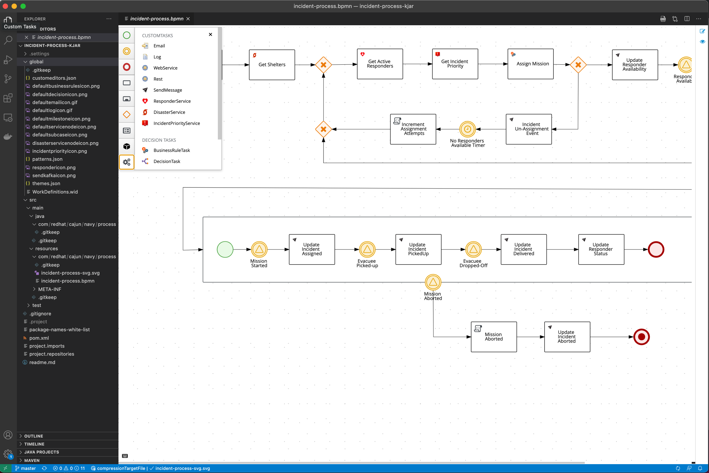
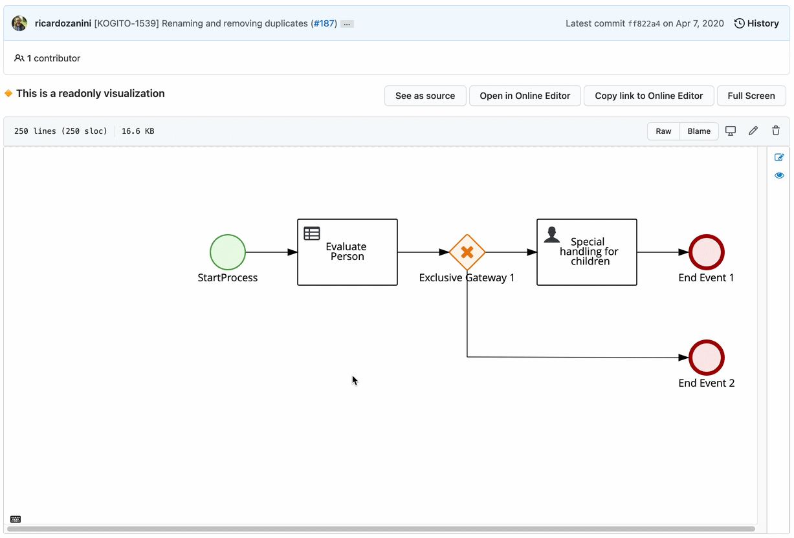
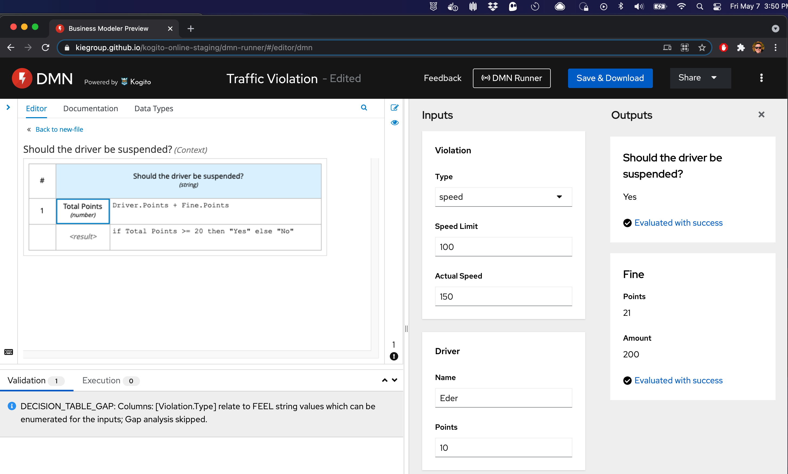

Kogito Tooling 0.9.1 Released!
We have just launched a fresh new Kogito Tooling release! 🎉 On the 0.9.1 release, we made a lot of improvements and bug fixes.
We are also happy to announce the MVP of our DMN Runner and many enhancements on Custom Task support on BPMN.
This post will give a quick overview of this release and add some highlights of our 0.9.0 release. I hope you enjoy it!
Custom Task Support Enhancement on BPMN
We made many improvements regarding custom task support on BPMN, especially related to compatibility with Business Central projects.

Stay tuned that soon we will publish a blog post with a deep dive into these enhancements.
BPMN Editor – Read-Only mode
We introduced read-only mode support for our BPMN Editors. This feature is handy when you embed our editors using our standalone editors.
Simple pass ‘readOnly:true’ in our editor startup to activate this mode (it also works for DMN). You can also see this new mode in action in our Chrome Extension:

Augmenting the developer experience with DMN Runner
We’ve been exploring ways to augment the developer experience for the Business Modeler Editors. In the spirit of “release early, release often” and MVPs, we’d like to share an early stage of a running prototype of the DMN Runner so that we can gather more feedback.

You can watch the presentation of this prototype in KIE Live#31 or try it out in our staging environment. Soon we will publish a post with more details.
New Features, fixed issues, and improvements
We also made some new features, a lot of refactorings and improvements, with highlights to:
- KOGITO-2528 – [BPMN] Reuse Data Types across the process
- KOGITO-4190 – SceSim runner does not display reason for failure
- KOGITO-2197 – [Scesim Editor] Bottom scroll bar getting hide
- KOGITO-3192 – [DMN Designer] Multiple DRDs support – The undo/redo are lost when the user changes between diagrams
- KOGITO-4892 – Unable to view service tasks in VSCode on windows
- KOGITO-4915 – Standalone editors setContent implementation should receive path and content
- KOGITO-4916 – [DMN Designer] Error during the save/marshaller of specific diagrams
- KOGITO-4266 – [DMN Designer] Decision Service is missing inputData element in model with multiple DRDs
Further Reading/Watching
We had some cool talks recently at the KIE youtube channel:
- KieLive#31 Augmenting the developer experience with DMN Runner, by Eder;
- KieLive#32 LACE Score Demonstration with DMN, by Rachid;
- KieLive#29 A chat about Open Source, leadership, and communities with Mark Proctor
I would like to also recommend the recent article from Yeser. He provides a complete step-by-step tutorial to use Test Scenario Editor to test your DMN assets on VS Code and also, this article from Guilherme where he details how the new Feel code completion works under the hood.
Thank you to everyone involved!
I would like to thank everyone involved with this release, from the excellent KIE Tooling Engineers to the lifesavers QEs and the UX people that help us look awesome!

{kind=link}
{kind=link}
{kind=link}